Speed is a scalar quantity that is a measure of the rate of change of distance.
Unit: If distance is measured in metres and time in seconds, speed is measured in metres per second ($m/s$)
### 2.1 : Speed, velocity and acceleration
**Workbook 2.1, 1.b.i**
Calculate the speed of a girl walking if she travels $100m$ in $50s$
**Workbook 2.1, 1.b.ii**
Calculate the average speed of a car that travels $2km$ in $2$ minutes
**Workbook 2.1, 1.b.iii**
An athlete moving at $4.5m/s$ travels a distance of $0.09km$. How long does this take?
### 2.1 : Speed, velocity and acceleration
* A *scalar* is a quantity which is the answer to the question "how much"
* A *vector* is a quantity which answers the questions "how much" + "in which direction"
* **Displacement** is the distance an object travels in a particular direction.
* **Velocity** is the speed an object travels in a particular direction.
> $\text{Velocity} = \displaystyle\frac{\text{displacement}}{\text{time taken}}$
2.1 : Speed, velocity and acceleration
$\text{avg. acceleration} = \displaystyle \frac{\text{change in velocity}}{\text{time taken}}$
or
$v = \displaystyle \frac{\Delta v}{\Delta t}$
Acceleration is a vector that is a measure of the rate of change of velocity
Unit: If time is measured in seconds and velocity in metres per second, acceleration has the unit metres per second squared ($m/s^2$)
### 2.1 : Speed, velocity and acceleration
**Workbook 2.2, 1.b**
Calculate the acceleration of a cyclist who increases her velocity from $5 m/s$ to $7 m/s$ in $0.5s$
**Workbook 2.2, 1.c**
How long does it take for a train to increase its velocity from $10m/s$ to $40m/s$ if it accelerates at $3 m/s^2$?
**Workbook 2.2, 1.d**
A car, initially travelling at $6 m/s$, accelerates at $4 m/s^2$ for $2.5s$. What is its final velocity?
2.2 : Motion Graphs
Distance-Time graphs
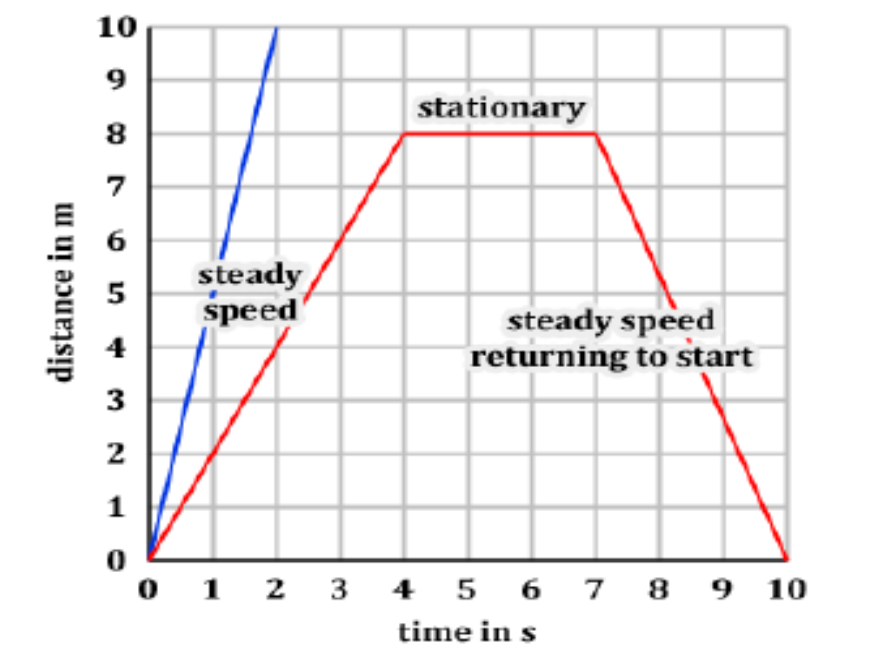
On a distance-time graph: speed = gradient
2.2 : Motion Graphs
Velocity-Time graphs
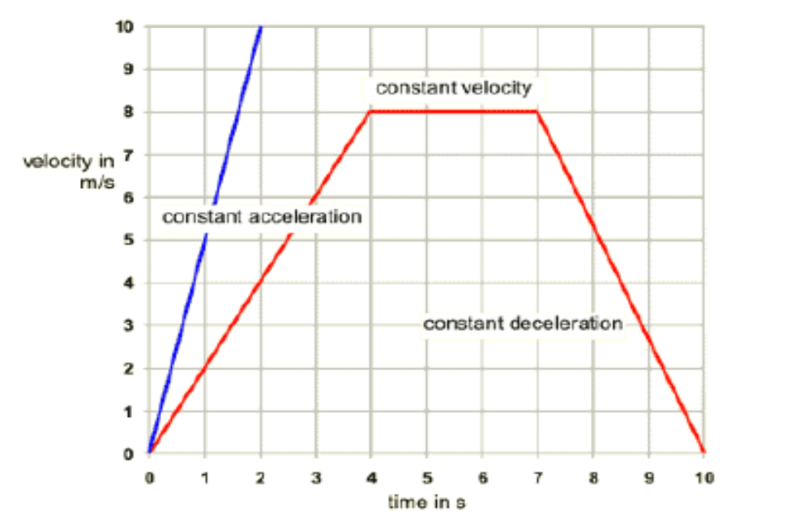
On a velocity-time graph: acceleration = gradient
On a velocity-time graph: distance travelled = area under the graph
2.2 : Motion Graphs
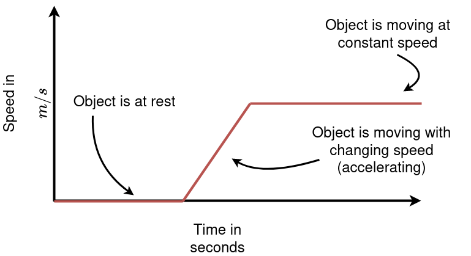
Interpreting a velocity-time graph (or a speed-time graph)
2.2 : Motion Graphs
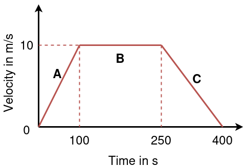
Workbook 2.4, 1.b.i
Calculate the acceleration in sections $A$, $B$, $C$
Workbook 2.4, 1.b.ii
Find the distance travelled in each section
### 2.2 : Motion Graphs
**Workbook 2.4, 2 (Extension)**
Sketch a velocity time graph for the following journey:
A girl runs with a constant acceleration of $1.5 m/s^2$ for $3s$. She then runs at a steady speed for $5s$ before decelerating at a decreasing rate for $10s$. Include values of both axes.
2.3 : Recording Motion
For Self Study
### 2.4 : Free Fall
* **Acceleration of free fall** is the *constant* downward acceleration applied on an object which makes it fall down
* This acceleration is represented by the symbol $g$.
* On Earth, the acceleration measures to be $9.8m/s^2$.
* On the moon, it is $1.62m/s^2$
* On Jupiter, it is $24.9m/s^2$
### 2.4 : Free Fall
**Learners Book, 2.5 Page 2**
A ball is thrown upwards with an initial velocity of $30m/s$. Graph the velocity-time graph for the motion till it falls back to the starting point.
**Extra Question:** How much distance has the ball travelled?
### 2.4 : Free Fall
* Without air resistance, gravity causes an acceleration of $9.8m/s^2$.
* With air resistance:
* The object falls and its speed increases
* The faster an object moves, the more air resistance it faces
* Eventually air resistance and gravity are equal and opposite
* No resultant acceleration, so the speed becomes constant
* This constant speed is known as the **terminal velocity**
The terminal velocity of a human is around $200km/h$.
The terminal velocity of an ant is around $6km/h$.
### 2.4 : Free Fall
The terminal velocity of an object depends on the weight, size and shape.
* A small dense object has a high terminal velocity
* A light object with larger area has a low terminal velocity
EXTRA: Different ideas of gravity in history
Aristotle (~400 B.C)
Aristotle thought that heavier objects fell faster than lighter objects.
Aristotle's explanation of gravity is that all bodies move toward their natural place. According to him, the natural place of water is a concentric shell around the Earth because earth is heavier; it sinks in water.
EXTRA: Three different ideas of gravity in history
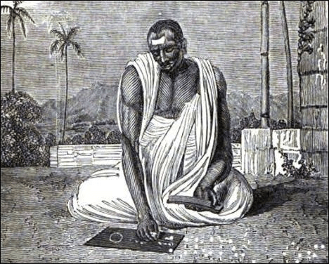
Brahmagupta, ~668 A.D.
In 628 CE, Brahmagupta was the first to describe gravity as an attractive force, and used the term "gurutvākarṣaṇam" in Sanskrit to describe it.
EXTRA: Three different ideas of gravity in history
Galileo Galilei, 1564 – 1642
Galileo showed that all objects fall at the same rate regardless of their mass, proving Aristotle wrong.
According to legend, Galileo dropped balls of very different weights off of the Leaning Tower of Pisa to demonstrate this.
2.5 : More Motion Graphs
For Self Study
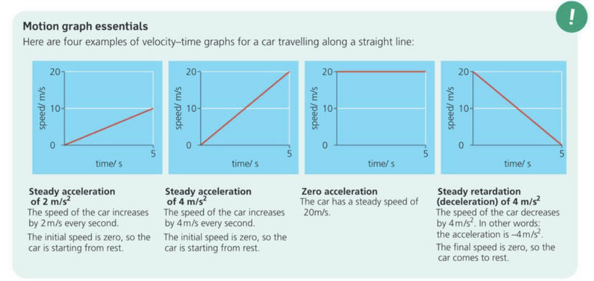
2.6 : Forces in Balance
For Self Study
A force is a push or a pull exerted by one object on another
The SI unit of the force is the Newton ($N$)
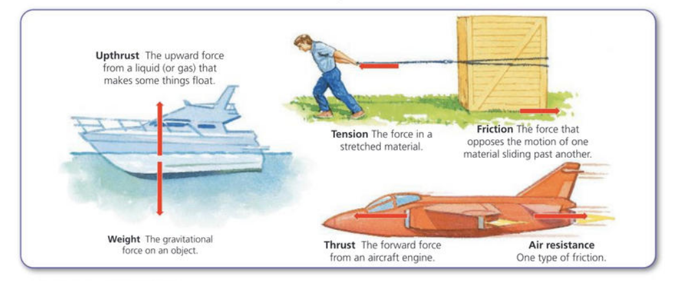
If an object is under a force that squashes it down, it it under compression
If an object is under a force that stretches it out, it it under tension
2.6 : Forces in Balance
Project: Build a tensegrity structure and understand how it works.
Note: You can also use chopsticks or straws. The lengths and the ratios are the important part.
### 2.7 : Force, mass, acceleration
* A force is a push or a pull. It can cause an object at rest to move, or if the body is already moving, it can change its speed or direction of motion.
* A force can also change a body’s shape or size. For example, a spring (or wire) will stretch when loaded with a weight.
2.7 : Force, mass, acceleration
Forces are vectors
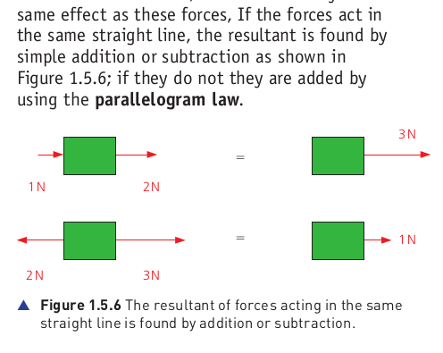
Important: Any resultant force causes an acceleration in the same direction as the resultant force
### 2.7 : Force, mass, acceleration
Newton's three laws of motion are three physical laws that describe the relationship between the motion of an object and the forces acting on it.
* **First Law:** the velocity of a body does not want to change
* **Second Law:** Gives a mathematical relationship between force, mass and acceleration
* **Third Law:** For every action, there is an equal and opposite reaction.
Newton's Laws of Motion govern the motion of everything from molecules to planets.
### 2.7 : Force, mass, acceleration
##### Newton's first law of motion
> An object stays at rest, or continues to move in a straight line at constant speed, unless acted on by a resultant force.
All matter has a built-in opposition to any change in its velocity.
This property of matter is called **inertia** (from the Latin word for laziness).
### 2.7 : Force, mass, acceleration
##### Newton's second law of motion
> The **resultant** force acting on an object is proportional to the mass of the object and its acceleration.
> $$ \text{Resultant Force} = \text{Mass} \times \text{Acceleration}$$
> or
> $$ F = ma$$
**Question:** Can we say that $1 N = 1 kg \\; m/s^2$?
**Answer:** The full meaning is that $1$ Newton is the force required to give a mass of $1$ kilogram an acceleration of $1 m/s^2$.
EXTRA: Newton
Sir Isaac Newton (1642 – 1726) was an English mathematician, physicist, astronomer, alchemist, theologian, and author who was described in his time as a natural philosopher.
Some say he was the first scientist, but he can also be called "the last magician"
### 2.7 : Force, mass, acceleration
**Workbook 2.7, 1.a.i**
Calculate the force exerted on an object if it accelerates at $5m/s^2$ and has a mass of $0.5kg$
**Workbook 2.7, 1.a.ii**
Calculate the acceleratation produced if a force of $3000N$ acts on a car of mass $900kg$
**Workbook 2.7, 1.a.iii**
What is the mass of a boy if he accelerates at $2m/s^2$ when a force of $95N$ acts on him?
**Workbook 2.7, 1.d (Extension)**
A pilot will lose consciouness if he is subjected to accelerations greater than 8 times the acceleration due to gravity ($8g$). By how much can the speed of his aeroplane increase in $2$ seconds if he is to remain conscious?
### 2.9 : Force, weight and gravity
* Any acceleration has to be caused by a **resultant** force.
* Every objects accelerates towards the earth at $9.8m/s^2$
* This acceleration due to gravity is also caused by a force: the **gravitational force**
* All objects exert a gravitational force on each other
**Question:** What causes the gravitational force?
**Answer:** No one knows. Newton described the concept of some force acting upon another at a distance as a "philosophical absurdity". In some ways, his description is accurate even today, since we do not have a proven cause for gravity.
### EXTRA: Newton's law of universal gravitation
All objects exert a gravitational force on each other
> $$ \text{Force of Gravity } F = G \frac{m_1 \times m_2}{r^2}$$
> where
> G is the constant $\\;\\;6.6 \times 10^{-11}$
This is the gravitational force between two objects even when they are stationary.
### 2.9 : Force, weight and gravity
* **Definition:** **Mass** is a measure of the quantity of matter in an object.
* **Definition:** **Weight** a gravitational force on an object that has mass
**Important:** Wherever an object is, its mass remains constant.
The weight of an object varies on how much gravitational force acts on it.
> $$ \text{Weight} = \text{mass} \times \text{acceleration due to gravity}$$
> or
> $$W = mg$$
**Note:** The SI unit of weight is Newton ($N$) since it is a force
### 2.9 : Force, weight and gravity
* The force of gravity acts through space and causes an object to fall to the ground.
* We try to explain gravity by saying that the Earth is surrounded by a gravitational field
* The **gravitational field strength** is defined as the force acting per unit mass.
2.9 : Force, weight and gravity
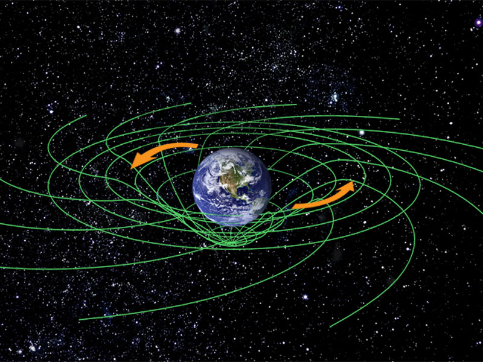
An easy (but incorrect) representation of the Earth's gravitational field.
2.9 : Force, weight and gravity
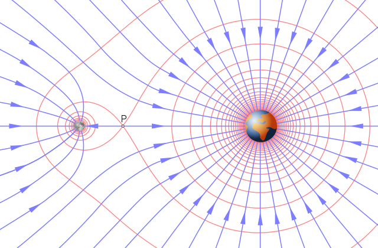
(Accurate) Gravitational Field diagram of the Earth and Moon
EXTRA: Gravitational Waves
2.9 : Force, weight and gravity
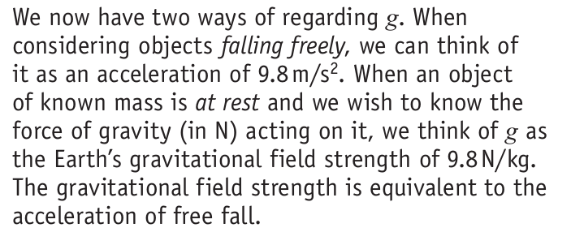
Important. Also refer Section 2.9 "Two meanings for $g$"
### 2.11, 2.12: Momentum
* Momentum can be defined as "mass in motion". If an object is moving, then it has momentum.
* It is a measure of how much "motion" is there within an object.
* Momentum is a useful quantity to consider when bodies are involved in collisions or explosions.
### 2.11, 2.12: Momentum
##### Difference between force and momentum
* Force represents external action upon a body, whether a pulling or pushing action.
* Force always involves two bodies, each applying a force on the other.
* Momentum is the representation of the amount of motion within a single object.
* Momentum can exist without any acceleration.
### 2.11, 2.12: Momentum
> $$ \text{momentum} = \text{mass} \times \text{velocity}$$
> or
> $$p = mv$$
**Question:** Is momentum a scalar or a vector?
**Answer:** Momentum is a vector since it involves velocity
**Question:** What is the SI unit of momentum?
**Answer:** The SI Unit of momentum is $kg \\; m/s$
### 2.11, 2.12: Momentum
##### Newton's Second Law of motion (version 2)
> * A resultant force causes a body to accelerate.
> * Any acceleration causes the velocity to change
> * Any change in velocity causes momentum to change
* From the above three points, we can conclude that any resultant force causes a change in momentum over time.
* Newton used this observation to come up with the equation for his second law of motion.
### 2.11, 2.12: Momentum
##### Newton's Second Law of motion (version 2)
> $$ \text{resultant force} = \frac{\text{change in momentum}}{\text{time}}$$
> or
> $$ F = \frac{\Delta p}{\Delta t}$$
Newton’s second law in the form $F = ma$ can only be used with constant masses moving in straight lines.
If the mass is changing we need to use the law in the form $F = \frac{\Delta p}{\Delta t}$
### 2.11, 2.12: Momentum
**Question:** Why is $F = ma$ the same as $ F = \frac{\Delta p}{\Delta t}$?
**Answer:**
$$
\begin{aligned}
F = ma \implies F & = m \times \frac{\Delta v}{\Delta t} \\\\
\implies F & = m \times \frac{(\text{final velocity} - \text{initial velocity})}{\Delta t} \\\\
\implies F & = \frac{(m \times \text{final velocity} - m \times \text{initial velocity})}{\Delta t} \\\\
\implies F & = \frac{(\text{final momentum} - \text{initial momentum})}{\Delta t} \\\\
\implies F & = \frac{\text{change in momentum}}{\Delta t} = \frac{\Delta p}{\Delta t} \\\\
\end{aligned}
$$
### 2.11, 2.12: Momentum
The equation $ F = \frac{\Delta p}{\Delta t} $ can be rearranged as
> $$\text{resultant force} \times \text{time} = \text{change in momentum}$$
> or
> $$F \times \Delta t = \Delta p$$
* The quantity $F \times \Delta t$ is known as **impulse**
* $F \times \Delta t = \Delta p\\;\\;$ is known as the **impulse-momentum** equation
**Note:** The SI unit of impulse is $N s$
### 2.11, 2.12: Momentum
* $F \times \Delta t = \Delta p$ talks about *how much force over how much time* is required to cause a given change in momentum
* For example, consider we want to stop a moving car. To get this effect:
* We can use the brakes to stop the car quickly. This is a large force applied over a short time
* We can also let the car slow down naturally by friction. This is a small force applied over a long time.
**Question:** Why do seatbelts and airbags work?
**Answer:** Seatbelts and airbags distribute the impulse over a longer time resulting in less force applied to the person.
### 2.11, 2.12: Momentum
**Workbook 2.10, 1.b.i**
What is the momentum of a $1000kg$ car moving at $20m/s$?
**Workbook 2.10, 1.b.ii**
The momentum of a cyclist is $100kg \\;m/s$ If the mass of the cyclist and her bicycle is $70kg$, what is her velocity?
**Workbook 2.10, 1.b.iii**
What is the mass of a boy if he has a momentum of $200kg \\; m/s$ and is running at $4 m/s$?
### 2.11, 2.12: Momentum
**Workbook 2.10, 1.c.i**
A toy car of mass $0.5kg$ increases its velocity from $1m/s$ to $2.5m/s$. What impulse did it receive?
**Workbook 2.10, 1.c.ii**
A trolley of mass $1 kg$ travelling at $0.6m/s$ receives an impulse of $1.6 kg \\; m/s$. What is the new velocity of the trolley?
**Workbook 2.10, 1.c.iii**
A force of $25N$ acts on a $30kg$ shopping trolley for $1.5s$. What is the velocity of the trolley if it was originally at rest?
### 2.11, 2.12: Momentum
* In a closed system, the total momentum before an event is the same as the total momentum after the event
* More accurately,
> When two or more bodies act on one another, as in a collision, the total momentum of the bodies remains constant, provided no external forces act on them.
* This statement is known as the **law of conservation of momentum**
### 2.11, 2.12: Momentum
**Question:** A truck weighing $4500kg$ and travelling at $12m/s$ collides with a car weighing $1200kg$ travelling in the opposite direction at $25m/s$. After the collision, they both stick together as one object.
Find their velocity after the collision.
**Question:** A gun weighing $2kg$ is fired. The bullet weighing $5g$ shoots out at $120m/s$. Find the recoil velocity of the gun.
### 2.11, 2.12: Momentum
**Workbook 2.11, 1. a,b,c**
A car of mass $1000kg$ travelling at $5m/s$ collides with a van of mass $1500kg$, originally at rest. The two vehicles stick together on impact.
* What is the momentum of the van before the collision?
* What is the momentum of the car and the van after the collision?
* What is the velocity of the two vehicles after the collision?
### 2.11, 2.12: Momentum
**Workbook 2.11, 2**
A trolley of mass $10kg$ and a trolley of mass $5kg$ are travelling in opposite directions, both at a speed of $2m/s$. The $5kg$ trolley rebounds at $1m/s$. What is the speed and direction of the $10kg$ trolley?
**Workbook 2.11, 3**
A car travelling at $10m/s$ collides with another identical car travelling at $4m/s$ in the same direction. The two vehicles stick together on impact. What is their new velocity?
### 2.10: Action and Reaction
##### Newton's Third Law
* **Informally:** Newton's third law states that for every action there is an equal and opposite reaction.
* The *action* and *reaction* refer to forces
* **Formally:** If Object A exerts a force on Object B, then Object B exerts an equal amount of force on Object A in the opposite direction.
> This law represents the fact that all forces occur in pairs. For example, it is not possible to push an object unless it pushes back on you.
2.10: Action and Reaction
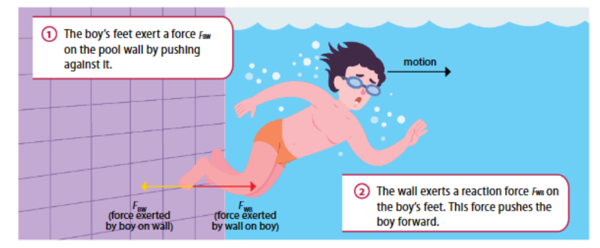
2.10: Action and Reaction
Newton's Third Law
The two forces of a Newtons third law always act on different objects
Note: the two forces are always of the same type as each other (e.g. both gravitational or both frictional)
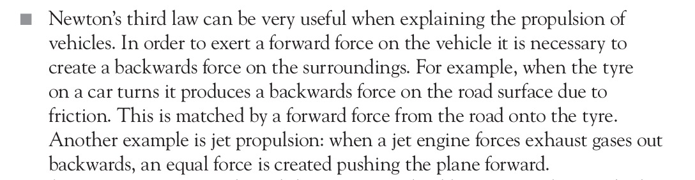
2.10: Action and Reaction
Newton's Third Law
2.10: Action and Reaction
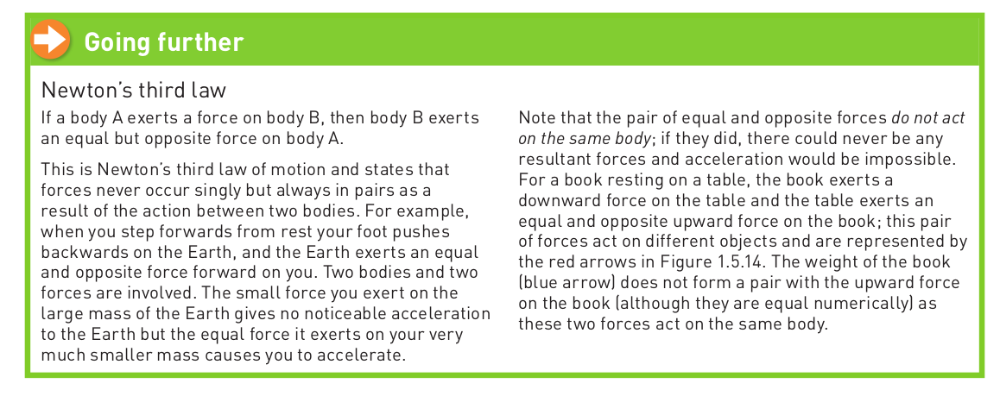
### Examples of Forces
##### Non-Contact Forces
* **Gravitational:** The pull exerted by gravity on any object
* **Electrostatic:** The attractive or repulsive forces between electric charges
* **Magnetic:** The attractive or repulsive force between magnets
### Examples of Forces
##### Contact Forces
* **Normal Force:** The push exerted by a surface on an object pressing on it.
* **Tension:** The pull exerted by a stretched spring, string or rope on an object attached to it.
* **Compression:** A force that squeezes something together
* **Friction:** The force that opposes motion between surfaces in contact
Different Types of Forces
Normal Force
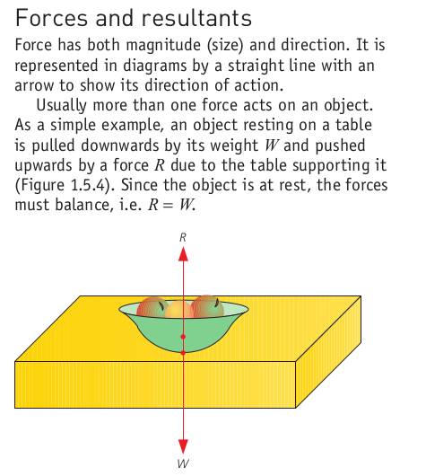
The normal force is the force that surfaces exert to prevent solid objects from passing through each other.
Note: The normal force is always perpendicular to the surface
### Different Types of Forces
##### Normal Force
**Q.** A $4.5\\;kg$ package of bubble gum is being delivered to the top floor of an office building.
The box sits on the floor of an elevator which accelerates upward with an acceleration of magnitude of $3.0\\;m/s^2$.
The delivery person is also resting one foot on the package exerting a downward force on the package of magnitude $5\\;N$.
What is the normal force on the package exerted by the floor of the elevator?
Different Types of Forces
Normal Force
Q.A person is pushing a $1.0\;kg$ box across a frictionless table with a downward diagonal force $F_A = 10\;N$ at an angle of $30^\circ$ as seen below. What is the normal force exerted on the box of cookies by the table?
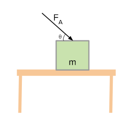
### 3.3: Tension
* Forces can change the size and shape of a body if the body is **elastic**
* **Examples:** a spring or a band of rubber stretches with increasing load
* The **extension** is defined as the change in length of the object being stretched.
* Load-Extension graphs help us understand how much force on the object causes how much extension.
### 3.3: Tension
* For some materials, the load–extension graph is a straight-line graph through the origin.
* This means the load is directly proportional to the extension.
* This means doubling the force, doubles the extension.
* Not all load–extension graphs are linear, which means the force required to stretch the material changes as the material is stretched.
Provided that a spring is not overstretched its extension, Δx, (length –
original length) is proportional to the force, F (Hooke’s law).
The stiffness of the spring is represented by the gradient of the graph.
This is often called the force constant, k, of the spring. k = Δ F
Δx
(k = 8.0 = 20 N cm−1 in the graph in Figure 2.23).
### Section: Tension on an Elastic Body
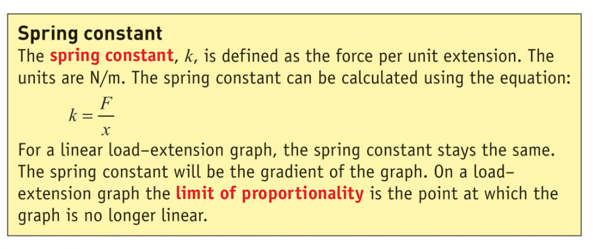
### Section: Tension
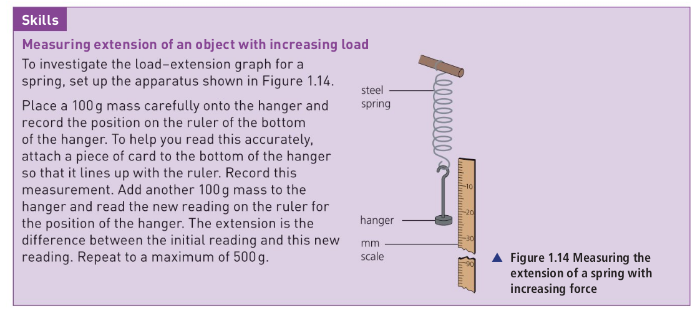
### Section: Tension
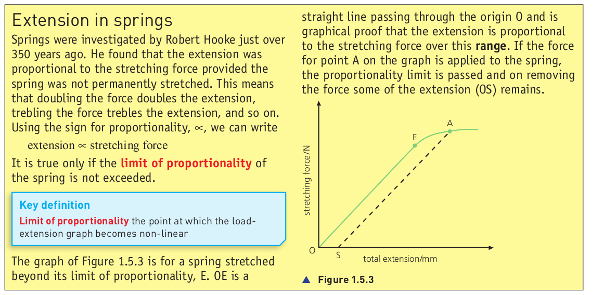
### Section: Tension
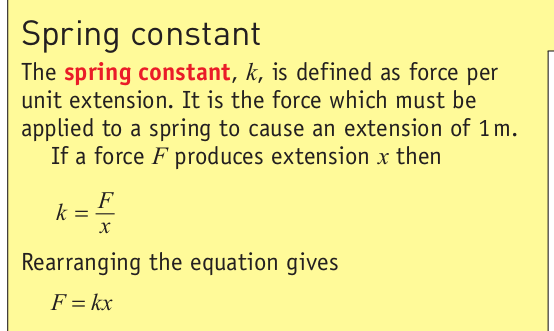
### Section: Tension
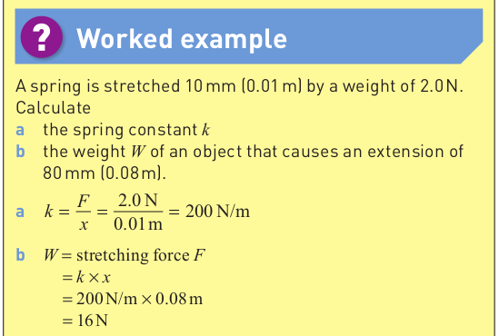
### Section: Tension
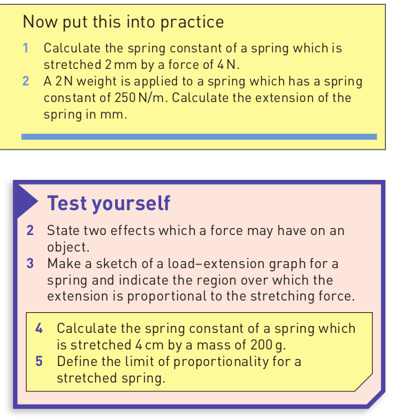
### 2.8: Friction
* **Solid friction** is a force which opposes motion between surfaces in contact.
* The amount of friction between two surfaces depends on:
* the material of the surfaces
* the roughness of the surfaces
* the normal force acting between them.
* If more masses are added the frictional forces will increase.
* In general, frictional forces can be unpredictable.
**Question:** What is the cause of friction?
### 2.8 Friction
* When an object moves through a gas or liquid, there is a friction force opposing the motion.
* This friction force in liquid is called drag and in air is called air resistance.
### 2.8 Friction
* Before any movement occurs, we refer to static friction.
* The static frictional force varies up to an upper limit just before motion begins.
* After motion has started the friction is called **dynamic friction**.
* Dynamic friction is independent of speed.
* Dynamic Friction results in heating.
**Important:** Static Friction is greater than dynamic friction.
* A common method for determining a coefficient of static friction involves placing an object on an inclined plane and increasing the angle, θ, until the object just begins to slip. At that point μs = tan θ.
The elementary property of sliding (kinetic) friction were discovered by experiment in the 15th to 18th centuries and were expressed as three empirical laws:
Amontons' First Law: The force of friction is directly proportional to the applied load.
Amontons' Second Law: The force of friction is independent of the apparent area of contact.
Coulomb's Law of Friction: Dynamic friction is independent of the sliding velocity.
### Da vinci
> In his notebooks, Leonardo first stated the 'laws' of sliding friction in 1493. His inspiration for investigating friction came about in part from his study of perpetual motion, which he correctly concluded was not possible.
perpetual motion machines